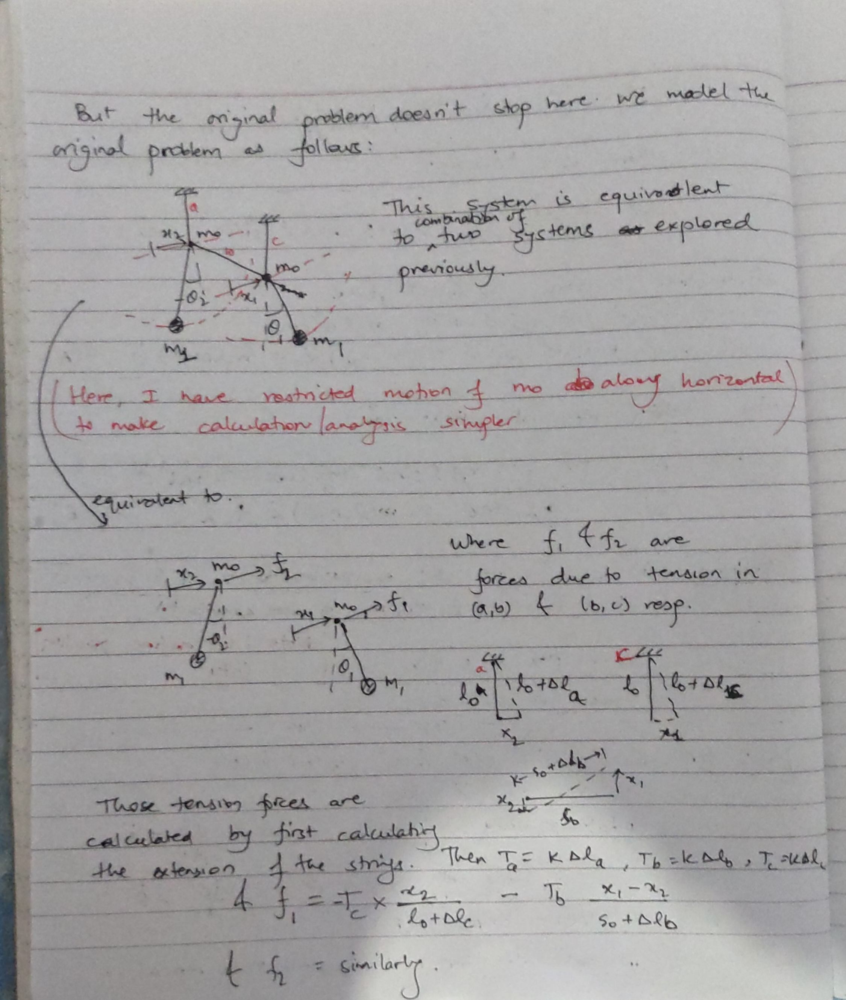

Coupled Pendulum
Table of Contents
When two simple pendulum are connected by a string, and one is moved, then gradually the osciallations are transferred from the first pendulum to the second (with the first one coming to a full stop) and then it transfers back from second to first, …
I came across a interesting this interesting fact, and then tried deriving it mathematically as well as by writing a simulation.
1. Simulation
1.1. Video/Results
1.2. Code
< Collapse code block
(ql:quickload :lispbuilder-sdl) (defpackage :pendulum-coupled (:use :cl)) (in-package :pendulum-coupled) (defstruct (state :conc-name) (x1 0.0d0) (v1 0.0d0) (θ1 0.0d0) (ω1 0.0d0) (x2 0.0d0) (v2 0.0d0) (θ2 0.0d0) (ω2 0.0d0)) (defstruct (configuration :conc-name ) (l 0.1d0) (m0 1d0) (s 0.15d0) (h 0.05d0) (m 3d0) (g 9.81d0)) (defparameter *config* (make-configuration)) (defun Tsinθ (y s) (* -35d4 y (- 1 (/ (sqrt (+ 1 (expt (/ y s) 2))))))) (defun support-force (mex otherx) "force at support i.e. f" (+ (Tsinθ mex (h *config*)) (Tsinθ (- mex otherx) (s *config*)))) (defun a-α% (ω θ support-force) "calculate a i.e. d²x/dt² and α i.e. d²θ/dt² for a single pendulum" (let ((c₁ (+ (/ support-force (m *config*) (l *config*)) (* (expt ω 2) (sin θ)))) (c₂ (* -1 (g *config*) (sin θ) (/ (l *config*)))) (det (/ (+ 1 (/ (m0 *config*) (m *config*)) (- (cos θ))) (l *config*)))) (values (/ (- c₁ (* c₂ (cos θ))) det) (/ (- (* c₂ (+ 1 (/ (m0 *config*) (m *config*)))) c₁) (* det (l *config*)))))) (defun a-α (state) (multiple-value-bind (a1 α1) (a-α% (ω1 state) (θ1 state) (support-force (x1 state) (x2 state))) (multiple-value-bind (a2 α2) (a-α% (ω2 state) (θ2 state) (support-force (x2 state) (x1 state))) (values a1 a2 α1 α2)))) (defun dS/dt (state) "State = (θ x ω v)" (multiple-value-bind (a1 a2 α1 α2) (a-α state) (make-state :θ1 (ω1 state) :θ2 (ω2 state) :x1 (v1 state) :x2 (v2 state) :ω1 α1 :ω2 α2 :v1 a1 :v2 a2))) (defun state+ (state1 state2) (make-state :x1 (+ (x1 state1) (x1 state2)) :v1 (+ (v1 state1) (v1 state2)) :θ1 (+ (θ1 state1) (θ1 state2)) :ω1 (+ (ω1 state1) (ω1 state2)) :x2 (+ (x2 state1) (x2 state2)) :v2 (+ (v2 state1) (v2 state2)) :θ2 (+ (θ2 state1) (θ2 state2)) :ω2 (+ (ω2 state1) (ω2 state2)))) (defun state* (k state) (make-state :x1 (* k (x1 state)) :v1 (* k (v1 state)) :θ1 (* k (θ1 state)) :ω1 (* k (ω1 state)) :x2 (* k (x2 state)) :v2 (* k (v2 state)) :θ2 (* k (θ2 state)) :ω2 (* k (ω2 state)))) (defun euler-forward (state Δt) (state+ (state* Δt (dS/dt state)) state)) (defun rk4 (state Δt) (let* ((k₁ (dS/dt state)) (k₂ (dS/dt (state+ state (state* (/ Δt 2) k₁)))) (k₃ (dS/dt (state+ state (state* (/ Δt 2) k₂)))) (k₄ (dS/dt (state+ state (state* Δt k₃)))) (k (state* (/ Δt 6) (reduce #'state+ (list k₁ (state* 2 k₂) (state* 2 k₃) k₄))))) (state+ state k))) (defun physics-update (state Δt) "We update the state using RK4. We could also use euler forward but that would be much inaccurate" (rk4 state Δt)) (defun speedup (dt) (* 0.02 dt)) (defun create-edges (state) (let ((a (vector 0 0 (+ (h *config*)))) (b (vector 0 (x1 state) 0)) (c (vector (s *config*) (x2 state) 0)) (d (vector (s *config*) 0 (+ (h *config*))))) (list (list a b) (list b (vector 0 (+ (x1 state) (* (l *config*) (sin (θ1 state)))) (* -1 (l *config*) (cos (θ1 state))))) (list b c) (list c (vector (s *config*) (+ (x2 state) (* (l *config*) (sin (θ2 state)))) (* -1 (l *config*) (cos (θ2 state))))) (list c d)))) (defun main3d () (let ((state (make-state :θ1 0.3d0)) (t1 (get-internal-real-time)) t2 (loops 1)) (setf 3d::*scaling* #2A((3418.224 0.0 0.0) (0.0 3418.224 0.0) (0.0 0.0 3418.224))) (setf 3d::*translation* #(240 -250 0)) (3d::main-loop :update-function (lambda () (setf t2 (get-internal-real-time)) (let ((dt (/ (- t2 t1) internal-time-units-per-second))) (loop repeat loops do (setf state (physics-update state (speedup dt))))) (setf t1 t2) (setf 3d::*edges* (create-edges state))) :drawing-function (lambda () (sdl:draw-string-solid-* (format nil "~dx" loops) 50 50) (sdl:draw-circle (3d:process-coordinate (vector 0 (+ (x1 state) (* (l *config*) (sin (θ1 state)))) (* -1 (l *config*) (cos (θ1 state))))) 5) (sdl:draw-circle (3d:process-coordinate (vector (s *config*) (+ (x2 state) (* (l *config*) (sin (θ2 state)))) (* -1 (l *config*) (cos (θ2 state))))) 5)) :keypress-function (lambda (key) (case key (:sdl-key-kp-plus (setf loops (* loops 2))) (:sdl-key-kp-minus (setf loops (ceiling (/ loops 2)))))))))
2. Derivation
